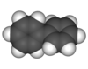

biphenyl

Definition: Biphenyl (also known as diphenyl, phenylbenzene, 1,1′-biphenyl, lemonene or BP) is an organic compound that forms colorless crystals. Particularly in older literature, compounds containing the functional group consisting of biphenyl less one hydrogen (the site at which it is attached) may use the prefixes xenyl or diphenylyl.It has a distinctively pleasant smell. Biphenyl is an aromatic hydrocarbon with a molecular formula (C6H5)2. It is notable as a starting material for the production of polychlorinated biphenyls (PCBs), which were once widely used as dielectric fluids and heat transfer agents.
Source: Wikipedia
Wikipedia Page
Wikidata Page